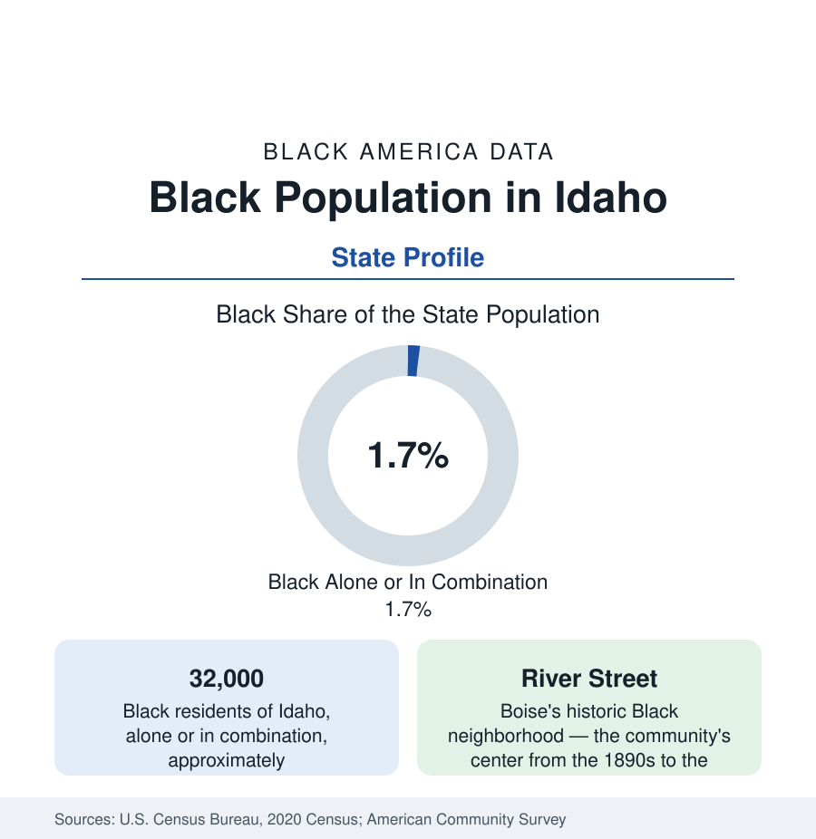

Black Census
Black Population in Idaho: River Street and the Boise Resettlement Hub
About 32,000 Black Idaho residents — one in fifty-seven — between Boise's historic River Street and a refugee hub's new generation. The census profile.

Idaho holds about 32,000 Black residents — Black alone or in combination — roughly one in fifty-seven of its people, with Black alone at about 15,000, or 0.8 percent. Like its Mountain West neighbors, Idaho's Black population is small in share and concentrated in one metro; unlike them, its modern growth is driven substantially by Boise's standing as one of the nation's most active refugee-resettlement cities per capita. The historic layer centers on Boise's River Street neighborhood.
River Street and the Early Community
Boise's Black community formed in the 1890s in River Street, the district between the Boise River and the railroad tracks southwest of downtown — a working neighborhood of porters, cooks, barbers, laborers, and their churches (St. Paul Baptist dates to the era) that remained the community's home for three-quarters of a century. The district's fabric was largely taken by urban renewal and freeway construction in the 1960s and 1970s, and the Erma Hayman House — a stone house built by a Black stonemason in 1907, preserved today as a city cultural site — stands as the neighborhood's surviving emblem and the anchor of Boise's Black heritage interpretation. Smaller historic communities existed in the railroad and mining towns (Pocatello's rail yards, the Wood River valley's service economy around Sun Valley, whose Black staff lived in Ketchum's segregated quarters in the resort's early decades) and around Mountain Home's air base after the Second World War.
The Resettlement Hub
Boise's modern Black population cannot be understood without its resettlement program, among the busiest per capita in the national system for three decades. The arrivals — Somali, Sudanese, Congolese (the largest recent group), Burundian, Ethiopian, and Eritrean, alongside the larger Bhutanese and Middle Eastern cohorts counted in other categories — settled first in the Garden City and west Boise apartment corridors and have since spread through the Treasure Valley's suburbs (Meridian, Nampa, Caldwell), where their second generation now moves through the valley's schools in numbers that make Black students a visible share of enrollment in several districts. The community's institutions — African markets and restaurants along the Fairview corridor, mosques and African churches, the state's African community associations — constitute Idaho's most dynamic new civic layer, built within a single generation.
The Rest of the Map
Beyond the valley, the population follows the bases and the universities: Mountain Home (the Air Force base) records the state's highest Black share for a small city, in the mid-single digits, on its service population; Pocatello (Idaho State) and Idaho Falls record small communities; Twin Falls — the valley's second resettlement site, with its own African population around the College of Southern Idaho and the food-processing plants — holds a growing share; Coeur d'Alene and the northern panhandle record shares under 1 percent, in a region whose late-century notoriety (the Aryan Nations compound stood near Hayden Lake until its 2000 dismantling) the state's Black residents navigate as documented history rather than present condition. The farm counties of the Snake River plain record small Black and African populations in their plant and dairy workforces.
Indicators and Change
The small-population caution governs the levels; the counts and the growth rates are firm. Idaho's Black population has roughly tripled in combination counts since 2000 — among the fastest growth in the nation from a small base — driven by resettlement, the Treasure Valley's tech-and-services boom (the Micron corridor), and military continuity at Mountain Home. The aggregate survey picture (young age structure, newcomer incomes rising with tenure, attainment at the valley's universities) matches the resettlement-state pattern of Maine and Nebraska at western scale.
Reading the Idaho Numbers
The education data register the change first, as they do in every resettlement profile: the Boise and West Ada districts' Black enrollments have multiplied within a decade, English-learner programs in the valley serve large African cohorts, and Boise State's and the College of Western Idaho's Black student counts — small in share, growing in number — are the higher-education layer the next decade's attainment tables will be built from.
Idaho's profile is two communities sharing one small set of tables: the River Street descendants, whose neighborhood survives in one stone house and a city's memory work, and the newcomers of the resettlement generation, already the majority of the whole. The 32,000 in these counts are the sum of Idaho's Black past and its fastest-arriving future.
More in Black Census
The Black Population of the United States: Size, Definitions, and Distribution
The Black population of the United States totals 52.8 million — 15.4 percent of the nation. How the Census Bureau defines and counts the population, and where it lives.
Black Median Household Income in the United States
Black median household income stands at $56,490 in the Census Bureau's annual income report — how the figure is measured, how it compares, and what drives it.
The Black Poverty Rate: Levels, Children, and the Long Trend
The official Black poverty rate is 17.1 percent — against 11.1 percent nationally and 7.7 percent for non-Hispanic White Americans. How poverty is measured and what the data show.
Source: U.S. Census Bureau, 2020 Census; American Community Survey; Population Estimates Program.